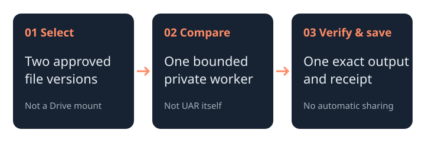
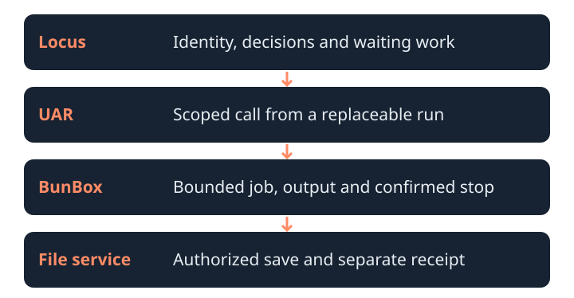

Origin Story · Architecture · Functional Specification · Implementation Plan
Give the agent a job,
not the whole computer.
BunBox is a proposed isolated workbench for JavaScript and TypeScript. Give it selected inputs and get one verified result without giving it access to your account.
Phase 0 · BlockedFraming and preflight verified. No VM execution, MCP server, or cloud qualification.

Read the design
The first milestone is one real, benign, independently stopped VM on an ARM64 Mac. Standard MCP clients and persistent Locus dots can later call the same typed external job. BunBox is not embedded in UAR and is not required for Locus’s first release.
Download canonical consolidated Markdown
Contents
Readiness summary
Phase 0 is blocked. See full verification notes for the source-reported checks and what is untested.
Open verification notes
01 / BUNBOX
Origin Story
Story ID: BB-ORIGIN-001, candidate revision 1. Owner: BunBox product operator. Audience: people using agents, harness integrators, and workspace operators. Based on the operator's requested local/code-tool and persistent-dot journeys and the current BunBox specification. The future scenes use synthetic examples, not measured customer behavior, verified cloud capability, or an adopted contract.
Before
I have two exports, and I need someone to show me where they disagree. My agent can tell me how to compare them, but that leaves me doing the work. If I give it a general shell or a copy of my whole Drive, I've handed it far more than two files. If I walk away or switch agents mid-job, I don't know whether the work stopped, is still running, or already produced a result. Starting over is an easy way to get two copies, or pay for the same work twice.
A developer sees another version of the problem: their ordinary agent can call tools over stdio, their remote harness uses Streamable HTTP, and an older customer client only speaks the old HTTP+SSE protocol. They want one trustworthy tool behavior, not three differently privileged executors. The operator needs to know which version actually works, whose capacity it uses, and whether a cancelled workload really stopped.
Observed baseline: BunBox currently has a fail-closed preflight and bounded framing; it has no VM execution, durable service or MCP server. Value hypothesis: deliver a useful file result without manual handoff or broad file access; resume without rerunning; integrate across actual harnesses without changing ownership or policy. Track time to usable output, manual steps, wake-to-visible-result, resource usage and retention cost; compare equivalent synthetic workloads before setting targets. Authorized execution, no cross-workspace access, truthful status and no duplicate effects are guardrails, not averages.
The future day
I select two CSV files and ask for a comparison. The agent tells me what it will use and where it will place the result. Inside the job, the code sees those copies and a temporary work area, not my account. I can ask a regular agent for a short result or ask my persistent dot to finish while I'm gone. If the job needs a decision, I can see what is waiting and why; other work can keep moving. When I return, I find the same job and the verified report. My dot can explain which inputs it used, whether the result is private, and whether anything needs my attention.
| Scene | Desired experience | Smallest credible evidence and failure condition |
|---|---|---|
| BB-01 · Local owner, first milestone | I execute one harmless JS/TS job in an isolated ARM Mac VM and get a bounded result. Missing runtime prerequisites block the job rather than running it on the host. | Pinned real-host VM and independent stop/cleanup readback; no host fallback. The current local gate remains unchanged. |
| BB-02 · Regular agent, stdio | I expose BunBox as a named tool, give my ordinary agent selected files and receive a structured result. If I disconnect, a qualified durable profile can find the original job; an unqualified local mode states that limitation. | Real named stdio client; lose the submit response and recover by original authorized intent, then verify one logical execution where continuity is promised. Stdio adapter death does not prove job cancellation. |
| BB-03 · Regular agent, remote MCP | A current remote tool can use JSON or streaming according to the chosen profile. An older client gets explicitly supported compatibility or a clear refusal; no hidden change in permission. | Exercise each claimed Streamable HTTP and legacy HTTP+SSE profile in the matrix: recovery by intent after a lost response, denied caller, oversized input, no weaker fallback, and safe repeat cancel or retrieve. |
| BB-04 · Persistent dot sleeps and resumes | I ask from one device, leave while the job waits, and return through a different UAR worker without repeating the request. I see the authorized saved report once. | Lose submit acknowledgment, replay the event, replace the worker, resolve the same operation and see one independent job and one file-service receipt. Scope stays with the same dot and work revision. |
| BB-05 · Ask, decline and revoke | When access changes or the job needs a decision, I see precisely what is being requested. An old approval can't apply to new data, scope or destination. Other items continue. | Typed bound review, stale or revoked grant refusal before dispatch/save, independent work continues, no protected action or extra notification. |
| BB-06 · Cancel without guessing | If I cancel while busy, I see that it was requested; only verified teardown says the VM stopped. If my file was already saved, tell me rather than pretending cancellation erased it. | Delay host confirmation, lose the transport task or the save response, and reconnect. Verify terminal cancellation only after independent teardown and no possible late save; distinguish an already committed save. |
| BB-07 · Privacy and limits | Another dot cannot read, cancel or retrieve my work. If capacity runs out or an output cannot be safely saved, I get a reason, not an endless spinner or a file in the wrong place. | Two synthetic workspaces, no cross-scope disclosure or side effect; quota refusal or bounded wait and isolated teardown. Verify safe artifact type/content and scratch deletion separately. |
| BB-08 · Operator recovery | If a worker or controller disappears, I can tell what is verified, what is uncertain and who owns the next step. A known job is never casually restarted under a new ID. | Lose the VM creation receipt; reconcile the exact owned attempt or retain unknown/quarantined capacity with no replacement or output promotion. |
Handoff and definition of done
Phases remain distinct: local real VM → bounded execution and durable artifacts → ordinary MCP tool with separately qualified profiles → hosted isolation → optional Locus integration. Independent jobs can proceed while an external dependency is pending; the operator needs the exact runtime/transport qualification and valid approvals before claiming more. Locus base continuity must not wait for BunBox.
Open decisions are the first named client per profile, first verified hosted runtime, allowed code and file formats, retention and locality, spend and latency targets, and the approved input/output evidence. No actual customer data or external recipient is needed for this candidate. The base contract, MCP contract, and Locus external profile carry this Story ID forward into scoped KBD phase and VLBV cases. The first After story should show the small job from request to usable result and report an honest refusal or recovery in the same language the user saw. A transport handshake, a green build, or a nice demo without the underlying receipt is not that proof.
02 / BUNBOX
Architecture
Current boundary
Phase 0 is BLOCKED. The workspace contains only bunbox-sandbox at
crates/sandbox; its bunbox binary is a readiness/preflight surface.
Dependency-free preflight and bounded framing are implemented and locally validated; see verification.md.
There is no linked Microsandbox SDK, VM integration, interpreter, durable store, or MCP service.
execution-contract.md and threat-model.md remain authoritative.
Intended dependency layers
| Layer | Responsibility | Admission gate |
|---|---|---|
| Bounded framing primitive | Reject oversized inputs before payload allocation | Local integration tests passed; not an SDK transport |
| Sandbox adapter | VM lifecycle, network denial, quotas, host-confirmed cleanup | Phase 0 blockers resolved |
| Mac VM probe | Benign provisioning and containment evidence | Approved runtime and isolated home |
| Execution worker | Pinned guest Bun, wrapper, state, bounded results | Real VM gate passed |
| Supervisor | Serialized dispatch, deadlines, cancellation, ownership | Validated worker/lifecycle |
| Durable storage | Accepted identities, reconciliation, finalized artifacts | Real VM gate passed |
| MCP adapter | Validated bounded requests, capability description | Core semantics and dependency approved |
These are responsibility boundaries, not additional crates already created. Outer adapters depend on core policy/contracts; core policy must not depend on MCP. The sandbox adapter alone owns runtime-specific integration. Guest helpers must not be treated as host authorization or isolation mechanisms.
Trust and control
- Submitted code, guest events/files/results, and guest packages are untrusted.
- The host OS/hypervisor, runtime dependencies, supervisor, parsers, and storage are trusted.
- IDs, generations, and sequences reject stale/malformed events; they do not authenticate a worker against hostile code sharing its VM.
- Keep cancellation/control independent of output flow so floods cannot starve teardown.
- Host policy owns paths, budgets, deadlines, resource identities, and cleanup decisions.
- All queues and upstream buffers need verified bounds; a bounded final queue is insufficient.
Runtime and ownership
Use an explicitly isolated MSB_HOME, never the existing legacy installation.
Record creation intent before provisioning and reconcile immutable installation-owned
identities under an exclusive lock; enumerate all resource pages without touching others.
Normal completion does not disable VM-wide quotas or idle deadlines.
Running timeout/cancellation invalidates the session; unknown teardown quarantines capacity.
Optional cloud integration
The Locus external-tool specification defines the proposed cloud boundary. Keep the BunBox supervisor and sandbox out of UAR. Locus and its workflow engine own sleep, wake, approvals and the owner's durable state. Cloud operation ownership, file promotion, tenant isolation and receipts require independent qualification. The local installation lock and Mac verification do not establish these properties for a replicated cloud service.
Deferred choices
Do not select an unreviewed SDK patch or alternate transport merely to unblock builds. Microsandbox 0.7.2 has unbounded event buffering and unenforced streaming timeout. Legacy msb 0.2.6 remains untouched. rmcp 3.4.1 is absent; 3.4.0 is an unapproved candidate. Storage engine, guest image, dependency APIs, and wire payload schema remain undecided.
03 / BUNBOX
System design
Status
Target design only; Phase 0 is BLOCKED. Dependency-free preflight and
length-prefix framing are implemented and locally validated (see verification.md).
VM/SDK integration remains unvalidated. No guest executes today.
Refer to execution-contract.md for behavior and threat-model.md for required controls.
The first runtime acceptance gate is a real VM on the user's ARM64 Mac.
Planned request lifecycle
- Validate ownership, source size, operation identity, policy, and admission capacity.
- Persist accepted identity before dispatch; reject key reuse with a different payload.
- Persist creation intent before provisioning any new installation-owned VM.
- Admit only one dispatched request per session and enforce a host-owned deadline.
- Validate bounded guest events against execution identity, generation, and sequence.
- Finalize a bounded result without assuming guest completion proves host-side cleanup.
This lifecycle is not implemented by the preflight CLI. Do not expose accepted work until durable acceptance and recovery exist. An initial VM probe is not an interpreter.
Framing and resource budgets
- Check a declared length before payload allocation; reject oversized and truncated frames.
- Apply independent source, result, stdout/stderr, frame, event-count, and queue budgets.
- Cover upstream transport buffers and collection paths, not only application queues.
- Bound sessions, CPU, memory, processes, disk, artifacts, and execution/idle time separately.
- Guest-side serialization consumes the guest budget; host deadlines cannot be reset by events.
- Final wire schema and numerical budgets require implementation review and measured tests.
Cancellation and uncertain outcomes
Queued cancellation prevents dispatch. Running cancellation or timeout invalidates the
session and requires VM destruction through a separate, non-starvable control path.
Only independent host-side confirmation completes cancellation; dropping a future is not stop.
If stop or resource removal cannot be confirmed, expose cleanup-pending and quarantine capacity.
A disconnected client neither implicitly cancels nor replays accepted work.
After restart, uncertain accepted executions become OutcomeUnknown, not inferred success.
Polling will return authoritative status once the durable service exists.
Recovery and persistence
Hold an exclusive installation lock before reconciliation or admission. Discover resources
by immutable installation/resource identity even if provisioning lost its reply; scan all pages.
Never remove unrelated resources or reuse quarantined capacity without confirmed cleanup.
Explicit state dies with worker/reset/failure; guest files may die with the guest volume.
Only finalized host-stored artifacts have independent retention guarantees; reset is not deletion.
A failed execution can leave mutations and side effects; execution is not transactional.
Artifact and guest boundaries
Use host-generated opaque artifact destinations, quota-bounded streaming, and race-resistant extraction that rejects special files and path escapes. No guest path authorizes a host path. Deny networking explicitly; do not inherit host secrets, control sockets, or general mounts. Residual callbacks/subprocesses remain possible, so quotas and idle deadlines survive completion.
External adapters
The MCP server profiles expose the same core job semantics without putting an executor in a transport process. The Locus profile adds durable handoff and independently authorized artifact promotion. Neither replaces the local VM or transport gates.
04 / BUNBOX
Functional specification
Status and authority
- Phase 0 is BLOCKED; no code-execution capability is available.
- This document is a plan, not evidence of an implemented interpreter.
execution-contract.mdgoverns semantics;threat-model.mdgoverns boundaries.- Implemented scope: one dependency-free
bunbox-sandboxcrate, preflight CLI, and preallocation-bounded length-prefix framing. - Local foundation checks passed: 9 integration tests, 92.31% line coverage, formatting,
and Clippy. See
verification.md; VM/SDK integration remains unvalidated.
Product goal
Provide a local, single-owner JavaScript/TypeScript execution service on the user's ARM64 Mac, with a Rust control plane and one Microsandbox VM per session. Mac is the first acceptance platform. Linux and Windows need separate evidence. MCP connections are transports, not execution-session identities.
Intended first release
- Execute an async wrapper with
await, explicitreturn, and execution-local declarations. - Permit only curated, version-pinned dynamic imports; no arbitrary package installation.
- Provide bounded output/results, structured errors, scoped files, and published artifacts.
- Keep explicit
stateonly while its live worker remains healthy. - Distinguish live state, guest workspace, and finalized host-stored artifact lifetimes.
- Serialize requests per session; do not promise transactional rollback or background services.
- Expose only actually implemented capabilities through the eventual MCP description.
Delivery gates
- Resolve bounded transport, timeout, and runtime compatibility blockers.
- Prove real VM provisioning, containment, and independently confirmed teardown on Mac.
- Only then implement the execution worker and validate guest Bun semantics.
- Add durable acceptance/recovery and artifacts before exposing accepted execution service.
- Add bounded MCP transport only after its dependency and ingress review are approved.
Acceptance requirements
- Reject execution when prerequisites are missing; never fall back to host execution.
- Enforce budgets before allocation throughout the transport, not after SDK buffering.
- Confirm termination before declaring running cancellation complete.
- Report unconfirmed cleanup as cleanup-pending and quarantine affected capacity.
- Report uncertain accepted work as
OutcomeUnknown; never replay it automatically. - Demonstrate isolation, restart recovery, cleanup, and bounded-load behavior on real VMs.
Explicit exclusions
No public/network service, arbitrary host mounts, host credentials or commands, Docker socket, static-import promise, live-state migration, or unsandboxed fallback. Preflight and framing validation alone do not establish VM readiness or security.
Future persistent-dot profile
A user can ask a Locus dot to transform selected files and retrieve a verified result after disconnect or worker replacement. The external-tool extension is optional and separately qualified; the single-owner Mac remains the first release and provides no cloud tenancy, runtime or deployment assurance.
05 / BUNBOX
Execution contract
Status: target contract, not an implemented interpreter. Phase 0 is blocked on a bounded Microsandbox transport. The current executable reports readiness; it does not accept or execute code.
Intended first release
Local single-owner service on this ARM64 Mac, with a Rust control plane and one Microsandbox VM per session running Bun. Linux and Windows require independent real-host validation. MCP connections are not execution sessions. Network/shared-server deployment is deferred.
Support JavaScript and TypeScript, await inside an async wrapper, explicit return, curated version-pinned dynamic imports, scoped files, structured errors, bounded stdout/stderr, and published artifacts. Static imports are not initially promised. Transformation and source mapping must be tested against the pinned guest Bun version; the host Bun version is not guest evidence.
Three different persistence lifetimes
| State | Lifetime | Failure behavior |
|---|---|---|
Explicit state object |
Healthy live worker only | Lost on reset, hard cancellation, timeout or VM/worker failure |
| Guest workspace | Current configured guest volume | Unexported files may be lost when the VM is destroyed |
| Published artifacts | Independent retention policy | Only finalized, host-stored objects receive durability guarantees |
Top-level declarations are execution-local. A failed execution may already have changed state, written files, or produced side effects. Execution is not transactional. Resetting runtime memory and deleting retained artifacts are separate operations.
Limits and cancellation
Enforce source, frame, result, output, event-count, queue, session, CPU, memory, process, disk, artifact and time budgets. Bounds must hold before allocations, including inside third-party transports. A byte cap applied after an SDK buffers output is insufficient.
Queued cancellation prevents dispatch. Running cancellation or timeout invalidates the session and destroys its VM. Cancellation is complete only after host-side termination confirmation. If cleanup cannot be confirmed, expose cleanup-pending and quarantine the capacity. Never interpret dropping a future as stopping a VM.
Only one request is dispatched per session at a time; this does not guarantee absence of residual guest callbacks or subprocesses. Background services are unsupported. VM-wide quotas and idle deadlines remain active between requests, and late output is attributed conservatively.
Failure and recovery
Persist accepted execution identity before dispatch. Reusing an owner/operation/idempotency key with a different payload is an error. Client disconnects do not implicitly replay or cancel accepted work; polling returns authoritative status.
After host restart, reconcile installation-owned resources before admission. Uncertain executions become OutcomeUnknown, never automatic retries or inferred successes. Hold an exclusive installation lock to prevent two control planes from reconciling each other's live resources.
Exclusions
No arbitrary package installation, public inbound networking, arbitrary host mounts, host commands, host credential inheritance, Docker socket, live-state migration, transparent in-memory recovery, or unsandboxed fallback. Helpers such as workspace and artifacts improve ergonomics but are not security boundaries.
Expose implemented capabilities and exclusions through the eventual MCP environment description. Do not advertise target capabilities as currently available.
Separately proposed profile: BunBox as an external tool for Locus adds authenticated cloud job and file contracts. It does not change this single-owner profile, the no-fallback rule or the local qualification gate.
06 / BUNBOX
MCP and ordinary agents
Status: Proposed compatibility specification. No MCP server is implemented. All profiles below are targets, not support claims. Keep the original single-owner VM qualification as the first BunBox milestone. Origin: Before story, BB-ORIGIN-001.
One tool contract, independent transports
General agents can use BunBox for bounded JavaScript/TypeScript over selected inputs and retrieve structured results or authorized artifacts. Persistent Locus dots use the same operation model, but Locus durably owns the pending task, attributable intent, decisions and resumption. Aside from bounded local guest-session state documented in the execution contract, neither requires a permanent process. BunBox must not be embedded in UAR.
Keep one Rust supervisor and durable job ledger behind typed submit, status, cancel, and get_result concepts. Authenticate and authorize each operation. submit accepts explicit input handles and bounds, and returns a stable job handle plus disposition; short jobs may return an already-completed result only after the same durable admission and result checks. Older clients can poll the ordinary status tool without a Tasks extension. An optional MCP task index links its negotiated task handle to the authoritative job. It cannot produce a second job, grant access, shorten cleanup, or erase independent job evidence. After disconnect, a qualified independent supervisor retains accepted work and its receipt. For a profile without that guarantee, report unsupported continuity or an unknown outcome unless independent evidence confirms completion or stop. Before submitting, regular harnesses persist a caller-generated intent key bound to authenticated owner/workspace and a canonical request digest. Recover by that key if the response and server handle are lost; same key with a different request conflicts. Incomplete reconciliation does not license another submission. A stdio child without an independent supervisor cannot claim it will survive closure; durable mode requires the stdio adapter to reconnect to the same scoped supervisor or an explicitly qualified host-managed equivalent.
In local stdio, use a dedicated process and owner binding established by host configuration; log outside the protocol stream. A known local process does not authorize arbitrary user paths. For remote profiles, verify caller and workspace at the service boundary, validate request origins as applicable, use protected ingress, and bound ingress, buffering, connection lifetime and concurrency. Expose no anonymous execution endpoint. Do not use the MCP transport session, request, or task ID as a principal or durable job key. Reconnect or version fallback cannot resend an uncertain submit.
Compatibility and qualification matrix
| Profile | Target behavior | Evidence required before claiming support |
|---|---|---|
| STDIO | Official rmcp stdio, with the framing, lifecycle and supported capability negotiation of each enabled revision. Establish separate local caller, job, and guest session lifetimes. | One named CLI/desktop client per advertised revision or identical verified behavior group; discovery, valid bounded tool call, disconnect/status, and demonstrable input/output bounds. Publishing a capability requires it to work on this profile. |
| Streamable HTTP, 2025 revisions | Single MCP endpoint, initialization and negotiation for each enabled 2025 revision. Qualify JSON and request-scoped SSE response behavior; explicitly document supported stateful and stateless modes. For modes that promise a session or resumable stream, exercise standalone GET SSE, session DELETE and event replay where applicable. | Test 2025-03-26, 2025-06-18 and 2025-11-25 independently before advertising each. Reconnect verifies that protocol session and durable job are different, even if GET/replay isn't offered. |
| Streamable HTTP, 2026-07-28 profile | Current target documented by MCP: per-request metadata and stateless transport, JSON or request-scoped SSE. Do not require older session headers, standalone session GET/DELETE, or legacy event resume. Qualify optional notifications, subscriptions or Tasks separately only if offered. | Verify exact normative status, rmcp release and actual client at adoption. Authority and job continuity must survive replacement of the HTTP replica. |
| Legacy two-endpoint HTTP+SSE, 2024-11-05 | Optional separate compatibility endpoint/adapter with the old SSE channel and POST message endpoint. Not the same as an SSE response over Streamable HTTP. Keep the same core, tool contract, job ledger and policy; never downgrade modern ingress or trust a legacy session identifier. | Qualify with a real SSE-only client behind authorized ingress. Use a maintained adapter compatible with current core or a separately isolated and audited older rmcp server transport pin if justified. Fail closed if the client cannot meet access or security requirements. |
| Negotiated MCP Tasks | Optional modern extension only on explicitly qualified profiles and versions. Deliberately distinguish legacy experimental Tasks from the newer extension. Preserve ordinary tools as compatibility path; scoped inspect remains authoritative. | Assert acknowledgment, tool error and expiry never misreport execution, promotion or VM teardown. Verify typed cancellation and the independent host receipt across client replacement. |
Before claiming any row, verify denied caller/scope, bounded oversized-input refusal, uncertain submit without retransmission or transport fallback, and repeat cancel/retrieve with fresh authorization and unchanged effect counts. The legacy edge must enforce the same policy independently of the transport.
2024-11-05 STDIO is also a candidate protocol profile if requested in the enabled matrix, not a guarantee of a modern SDK pin. Record supported fallback and exact negotiated versions rather than interpreting “all” as unknown future revisions or promising all optional MCP capabilities. For unsupported versions or authentication modes, return a clear refusal with the supported alternatives; do not execute or retry via a weaker path. HTTP rollout is private/opt-in first, separate from VM proof and from cloud exposure approval.
Current upstream rmcp transport documentation lists stdio and Streamable HTTP, but explicitly excludes the old two-endpoint HTTP+SSE transport from current releases. The historical 0.8.5 feature listing shows an older legacy transport option, not an approved dependency. At implementation adoption, verify release/tag, enabled feature graph, security and transport bounds for each selected adapter. Do not silently select the previously discussed rmcp pins or use version support as a proxy for real interoperability.
Sources: MCP transport specs for 2024-11-05, 2025-03-26, 2025-06-18, 2025-11-25, 2026-07-28 Streamable HTTP, and MCP Tasks. These are compatibility references, not implementation evidence.
07 / BUNBOX
Locus external-tool profile
Status: Proposed cloud extension, not an adopted phase, supported deployment, or runtime qualification. The single-owner ARM64 Mac release contract and blocked Phase 0 remain unchanged. BunBox is not embedded in UAR and is not a dependency for the first Locus delivery.
Origin: BB-ORIGIN-001. Regular agents use the same core tool through the separate MCP server specification.
What the user gets
I ask my dot to compare two spreadsheets I selected. I can close the app, start other work, and come back to the same job and its result. The cloud profile must prove that replacing a UAR worker never runs my job twice. Another user's dot cannot open or cancel it. If I cancel, I can see whether execution has really stopped rather than mistaking an acknowledgment for cleanup.
The first cloud workflow is a private, synthetic CSV comparison using bounded TypeScript and a single output. It needs no external network from the guest, no arbitrary dependencies, no model inference inside BunBox, and no file modification or distribution outside the approved result location.
Ownership
| Owner | Authority |
|---|---|
| Locus | Owns the workspace, dot, work revision, approvals, stable effect identity, continuation and notification. Existing Temporal workflow owns durable timers and wait progression; no second scheduler. |
| UAR | Hydrates a replaceable run and invokes a typed external tool through the authorized policy/effect route. It neither links the BunBox runtime nor manages VMs. |
| BunBox | Owns durable job acceptance, runtime admission, execution, independent VM verification and private staged output. Its internal job and receipts survive a disconnected adapter or controller restart. |
| Workspace file service | Owns selected file access, durable user-visible artifact, retention and deletion. Independently authorizes reads and idempotent final save; a BunBox receipt isn't a file-access grant. |
Locus's durable inbox and workflow awaken bounded UAR runs. One run can submit and park; a scoped completion event can wake a different run. Transport events are hints until confirmed with the owner of the record. On event loss, an authorized durable timer checks outstanding jobs without replaying submit. Retain current instructions, exact reviewed request identity and pointers to necessary records, not guest process memory, a session transcript, or credentials. Store a pending decision before asking the user and release workers while waiting. Use the existing outbox to announce meaningful, verified outcomes once; keep routine polling silent. This applies the Anthropic always-on pattern without adopting Claude Managed Agents or changing who owns effects. Anthropic's secure deployment guidance informs credential brokerage outside the execution environment. Its webhook guidance illustrates why delivery alone is not an authoritative job ledger.
Proposed tool contract
These are logical operations, not claims that HTTP or MCP methods already exist. Keep the application contract independent of transport. The first cloud integration may use ordinary typed tool calls for submit, read status/result and cancel. Optional MCP Tasks support is negotiated and version-pinned. Neither a task ID nor an MCP session ID is a job identity; no task completion, expiry or cancellation status establishes BunBox's execution result or host teardown. See MCP Tasks extension and 2026-07-28 extension specification. Qualify the exact client and server implementation; no automatic downgrade or alternate route for a job with an unknown outcome.
| Operation | Request and observable result |
|---|---|
| Submit | Authenticate the calling workload and independently resolve workspace, dot and permitted operation from a scoped grant. Bind immutable input versions/digests, code digest, output policy, runtime profile, resource limits and work revision to one user intent ID. Persist acceptance and ownership before admitting work. Return a durable BunBox job ID or a qualified refusal, not completion. |
| Inspect | Look up by scoped job ID or original intent ID, with fresh read authorization. Return ownership-safe status, result/cleanup dispositions and receipt references. Receipts identify the exact job, worker attempt, runtime/image and policy versions, timestamps, measured usage, authorized output digest and independent teardown disposition as applicable. An unknown external ID grants no access and must not expose another workspace's job existence. |
| Cancel | Authenticate and recheck the right to cancel; record an idempotent cancel request against the exact job. Queued work must not start after cancellation wins admission. A running job remains cancellation requested or cleanup pending until verified stopped. No replay or output promotion while cancellation is unresolved. |
| Retrieve / save result | Read private immutable staging by authorized job, manifest and digest. Reject stale, revoked or mismatched work. Do not infer authority from a returned filename, output text, link, or UAR state. Repeat the same approved save by its stable action ID; do not create another user-visible file if a response is lost. |
Before a consequential boundary, recheck current authority and the owner/revision fence, including VM admission, opening inputs, and output promotion. Revocation prevents new actions; it cannot recall already returned bytes. Record a completed effect honestly if it won the authorized commit race. Only currently authorized principals can poll, cancel or retrieve; qualified cleanup carries a narrow internal permission independent of the revoked user's result access. No bearer credential or general datastore/Drive mount in the guest. Select files via explicit grants and stage only pinned versions. Any future network access, new destination or broader scope needs its own qualification.
State, resources and failure recovery
- One logical job per workspace, dot and stable Locus intent ID, checked against the immutable originating work identity. UAR and Temporal run/attempt IDs never form that key. The authoritative work record carries it through workflow rollover and executor replacement. Store a canonical request digest; same ID plus different digest conflicts. Do not disclose an old result on retry without current authorization. Keep the dedupe record or a tombstone through the declared replay window; reject expired retry keys rather than treating them as fresh submissions. A caller's reconnect, a new UAR session, a timer, and broker redelivery cannot create a new job.
- Persist VM creation intent, placement owner and fenced attempt before provisioning. Multiple controllers must agree through a durable ownership mechanism; a local installation lock alone cannot coordinate cloud replicas. If acceptance or VM creation is uncertain, reconcile authoritative inventory and receipts for that exact attempt. If reconciliation is incomplete, hold unknown and do not re-dispatch. No cross-service atomic commit or exactly-once claim for external systems.
- Keep separate execution, output and teardown states. A worker or guest exit message does not prove resource release. The host independently confirms stop and cleanup; otherwise quarantine the allocation and count its capacity. Cancellation can rule out promotion even if code computed output. Staged outputs are bounded, private, not automatically consumable and expire according to policy. Treat all inputs and outputs as data, never tool instructions. Verify the declared media type, row/schema and size limits and spreadsheet-safe export as well as byte integrity.
- Use job-bounded sandbox scratch space; don't promise transparent guest state recovery or reuse one guest across principals. Private Drive refers to the dot's authorized storage, not a mounted Google account. Stage authorized source versions and verify an output manifest through the host. For this first profile, hold promotion until cleanup is confirmed, then recheck the current authorization and exact destination at the controlled save. Store result retention and deletion separately from VM lifetime. Serialize cancellation and the final save at one durable Locus promotion boundary: cancel that wins before the save is admitted revokes the save; once a save is in flight with an unknown outcome, hold and reconcile instead of claiming either winner. If the file service confirms the already authorized save committed, keep it and report that cancellation came too late; do not duplicate or silently retract it. A pending cancellation can close without promotion only after the file service confirms the in-flight save was terminally rejected or fenced against any later commit. A negative read alone is insufficient. Route every authorized cancellation path through the same promotion decision. Protect this rule with a fenced save intent and idempotent file-service receipt, not an assumed cross-service transaction.
- Declare and measure per-workspace and host quotas for compute, memory, execution and queue age, scratch storage and outputs. Keep the durable queue outside disposable workers. UAR action capacity, BunBox VM capacity and Kubernetes autoscaling are distinct; only one owner meters each resource. Unqualified tenant pooling, runtime profiles or placement fail closed. A local Mac pass cannot qualify Linux or a shared cluster. Use Kubernetes multi-tenancy guidance for the deployment boundary; a pod or language runtime alone is not an isolation guarantee.
User-level proof and rollout
| Gate | Acceptance outcome and evidence |
|---|---|
| Local foundation | Complete the existing approved transport and real ARM64 Mac VM gate before claiming execution, containment or cleanup. Verify the actual host/runtime independently. |
| Cloud executor | Pin and qualify a real hosted Linux profile on its intended infrastructure. Prove scoped placement, isolation, limits and independent teardown on that profile before tenant sharing. No host-process fallback. |
| Persistent dot | Submit the synthetic CSV job, lose its acknowledgment and replace the UAR worker. Recover the same scoped job and verified artifact without a second execution or duplicate promotion. A second synthetic workspace cannot inspect, cancel or retrieve it. Read BunBox and the file service independently. |
| Provisioning recovery | Lose the BunBox controller after provisioning but before allocation receipt. Reconcile only the exact fenced allocation. If inventory is incomplete, show unknown, quarantine capacity and admit no replacement VM or promotion. |
| Cancellation and revocation | In the same workflow, make a repeat user operation with a fresh intent. After cancel is accepted, delay host confirmation and replace the client. The user sees pending cleanup, no promotion and no new VM. Final cancellation requires durable host confirmation even if the transport task expired. Revoke a queued grant or pre-save permission and prove no subsequent execution/save crosses that boundary. Exercise both cancel-before-save and committed-save-with-lost-ack orderings, and verify a delayed fenced save cannot commit after cancellation. Include harmless formula-like and instruction-like cells and verify safe export without treating them as directives. |
Run ordinary tool-free Locus continuity first. Then qualify this opt-in capability against the exact builds with a fake business data fixture. Scope choices still open: supported hosted runtime, transport/version, recovery windows, retention/data locality, latency and spend limits. No cloud installation, tenant access, or unrestricted code-execution route is authorized by this proposal.
08 / BUNBOX
Isolation and threat boundaries
Boundary
Untrusted: submitted code, the Bun process, guest files, package contents, guest-generated events and results. Trusted: host OS/hypervisor, Microsandbox/runtime dependencies, Rust supervisor, host parsers, policy enforcement, storage/extraction, and authentication/ownership enforcement.
Guest messages can lie. Execution IDs, generations and sequence validation reject malformed or stale messages; they do not authenticate the worker against hostile code in the same VM. Guest events cannot authorize host paths, raise limits, reset host deadlines or prove teardown.
Mandatory controls
- One microVM per session, no host-process fallback.
- Explicit network denial; the upstream default is not offline.
- No host secrets, control sockets or general host mounts inside guests.
- Bounded allocations through the entire ingress path, not only BunBox's final queue.
- Separate cancellation/control path that cannot be starved by output.
- Independently confirm stop/kill and persisted-resource removal.
- Record creation intent before provisioning; discover resources even if creation loses its reply.
- Scope recovery to immutable installation/resource identities, scan all enumeration pages, and never remove unrelated resources.
- Quotas remain active after guest completion; untrusted serialization runs inside the guest budget.
- Artifact destinations are host-generated opaque identities. Stream with quotas and race-resistant extraction; reject special files and path escapes.
Known blockers
Microsandbox 0.7.2's high-level execution event queue is unbounded; collect() accumulates output. The streaming path does not enforce its supplied timeout. Stock rmcp 3.4.0 stdio decoding also needs explicit message length limits. See compatibility.md for release-pinned evidence.
The repository therefore does not link the SDK, download a new runtime, create VMs, or accept arbitrary code yet. Pure framing tests cannot certify the virtualization boundary. Fixing one channel in a dependency is not enough unless all upstream buffering and cancellation behavior have also been verified.
Testing safety
Start with benign fixtures. Adversarial guest fixtures run only after containment and independent termination are proven, with small budgets and a host watchdog. Never run memory/disk/process exhaustion tests directly on the host. Host-side malformed-frame tests use tiny bounded in-memory inputs.
A production release requires real isolation, recovery, cleanup, and soak evidence. Rust memory safety alone is not a sandbox guarantee.
Proposed shared-service boundary
The external-tool profile adds per-operation authorization, workspace-scoped jobs and artifacts, fenced promotion and independent cloud isolation. Every MCP transport profile, including legacy compatibility, must enforce the same policy. Phase 0 local evidence cannot qualify those boundaries.
09 / BUNBOX
Transport decision
Status: source-reviewed proposal, not implemented or runtime-verified.
Release examined: Microsandbox 0.7.2, commit 60d4dc8a436fb9365491567ec21d073e924e3c6d.
Recommendation
Keep the SDK for VM lifecycle and bypass its high-level execution mapper using the public generic raw agent client. Use one dedicated connection per active session/execution with bounded global concurrency. This avoids maintaining a fork merely to remove one unbounded queue, at the cost of owning more protocol integration and decoding validation.
Do not confuse microsandbox::agent::AgentClient (the SDK wrapper around the optimized client) with microsandbox_agent_client::AgentClient (the configurable generic protocol client).
Released APIs to verify in a compile-only integration:
microsandbox::agent::AgentClient::socket_path(name)- Generic
AgentClient::connect_withandConnectOptions::limits ClientLimits: frame size, in-flight requests, queued writes/responses, buffered bytes, incomplete-frame timeout and request timeoutstream_raw/stream_raw_with, andRawStream::into_partsClient::closefor local task shutdown, not remote termination
Why a bounded SDK event channel alone is insufficient
The SDK mapper has an unbounded queue and buffered collect() grows vectors. Upstream optimized queues are bounded by counts but decoded payload copies also consume memory. The normal guest's 4-KiB output chunks are not a hostile-peer wire guarantee. Shared-memory arenas are another separately budgeted resource.
The generic client's router checks frame length and reserves its shared byte budget before allocating frame bodies. However:
- Agent handshake uses the ordinary four-MiB codec before configured routing limits apply.
- CBOR decoding allocates envelope and payload vectors; malicious lengths/nesting require a dedicated allocation/complexity review and adversarial tests.
- Transport byte accounting excludes returned data retained by application code and decoded copies.
- Full response queues can stall inbound processing. Shared inbound/outbound budgets can delay sending a kill signal.
The custom framing helper already in BunBox is a compatibility primitive, not this upstream wire protocol or a fix for these issues.
Cancellation design to prove
Drain and discard output independently from client consumption; signal cancellation concurrently with draining. Bound signal delivery and terminal wait. Guest Exited may arrive only after output drains, so it cannot be the sole teardown authority. Escalate through separately controlled whole-VM lifecycle operations and verify stopped/removed identity. If confirmation fails, expose cleanup-pending and keep capacity charged. Dropping/closing the connection does not establish guest termination.
Installation boundary
For a future dependency experiment, tagged source supports:
microsandbox = { version = "=0.7.2", default-features = false, features = ["local"] }
Do not enable download-binaries or embed-binaries. Audit the resolved feature graph for feature unification, and separately approve runtime provisioning. A crate pin alone does not verify the installed binary/library version. Use isolated build/runtime/config roots and preserve the old msb installation.
Required experiment tests
Oversized prefixes; incomplete frames; malicious CBOR lengths/nesting; handshake limits; paused consumers; stdout/stderr floods; cancellation with full queues; lost terminal events; VM termination independently from the exec stream. No hostile guest test until benign VM boot and hard termination work.
Release-pinned source map
All paths below are relative to the examined commit:
sdk/rust/lib/sandbox/exec.rs: unbounded mapper, collection, ignored streaming timeout.sdk/rust/lib/agent/client.rs: wrapper identity and local socket path.packages/agent-client/rust/lib/client.rs: generic public alias.packages/protocol-client/rust/lib/options.rs: configurable transport limits.packages/protocol-client/rust/lib/router.rs: frame preallocation budget and dispatch backpressure.packages/agent-client/rust/lib/protocol.rs: handshake codec exception.crates/protocol/lib/codec.rs,message.rs: framing and CBOR allocation boundaries.crates/agentd/lib/session.rs: guest output budgets and terminal ordering.sdk/rust/build.rs,sdk/rust/lib/runtime/spawn.rs: installation feature gate and runtime resolution.
10 / BUNBOX
Pinned compatibility findings
Status
Blocked, not an interpreter. Source review and host prerequisites are recorded; no Bun microVM, hostile-workload containment, guest image, or teardown behavior has been validated. The preflight command reports these known blockers, not a live installation health check.
Local observations: ARM64 macOS 26.7.1 / 25G309, kern.hv_support = 1, Rust/Cargo 1.98.1, host Bun 1.4.2, installed msb 0.2.6. CLI presence and hypervisor capability are necessary but insufficient.
Exact release findings
| Item | Evidence | Decision |
|---|---|---|
| Microsandbox 0.7.2 | Published, non-yanked in Cargo sparse index | Research candidate only; not linked |
| Installed msb 0.2.6 | Legacy tag's SDK is 0.1.2, HTTP server architecture | Preserve installation; do not mix APIs |
| rmcp 3.4.1 | Absent from checked registry | Unresolved requested pin |
| rmcp 3.4.0 | Published, non-yanked; official matching release | Proposed replacement, not installed or approved |
| Bun 1.4.2 | Host CLI | Guest version/image unverified |
Registry references: microsandbox, rmcp. Registry API returned HTTP 403; official sparse-index reads succeeded. GitHub repository and code searches were performed before implementation.
Blocking source findings
- Microsandbox 0.7.2 execution:
ExecHandleconsumes an unbounded event receiver. The mapper forwards events into an unbounded channel;collect()accumulates output. Streaming ignores the supplied timeout. A bounded queue outside the SDK cannot fix hidden allocations. - rmcp 3.4.0 stdio: stock reads need length bounds; the codec's bounded constructor must be explicitly configured and tested, along with outbound limits.
- SDK build script and features: default
download-binariescan install runtime components during compilation. Do not enable it casually or target the existing runtime home.
A candidate SDK integration must isolate MSB_HOME at build and runtime, isolate MSB_CONFIG_PATH, explicitly select the local backend, and audit resource paths. Coexistence with the legacy installation remains untested. Runtime installation needs separate approval through the managed CLI route; no shell installer or download-and-run shortcut.
Actual Phase 0 exit gate (all still outstanding)
- [ ] Select and audit an end-to-end bounded transport, including SDK/protocol buffers and event chunk sizes.
- [ ] Verify an independent termination path cannot be starved by stdout backpressure.
- [ ] Install approved project-isolated runtime components without modifying legacy msb.
- [ ] Pin a Linux ARM64 Bun image by digest and capture runtime identities.
- [ ] Create one VM through Rust, run benign Bun input, check duplex I/O, stderr, EOF and exit.
- [ ] Explicitly disable guest networking and verify denial, including DNS and IPv6 where supported.
- [ ] Verify resource limits; distinguish vCPUs from CPU quota, guest RAM from host overhead, and volume growth from disk size.
- [ ] Observe stop/kill completion, remove persisted resources, and independently enumerate all pages to confirm cleanup.
- [ ] Test lost creation reply, host crash and failed cleanup without touching unrelated resources.
Use a narrow reviewed SDK patch or a supported lower-level bounded API only after examining the whole transport. Do not approximate this gate with mocks or host-process execution. If no acceptable path exists, request a backend decision rather than weakening the contract.
References to reuse
11 / BUNBOX
Staged implementation plan
Checked items indicate completion of that specific item only. Local-code verification does not imply VM readiness. See verification.md for commands and results.
Baseline
- [x] Establish the single-crate workspace:
bunbox-sandboxatcrates/sandbox. - [x] Record target semantics in
execution-contract.mdand controls inthreat-model.md. - [x] Record Mac-first sequencing and current limitations in the five planning documents.
- [x] Complete the dependency-free, fail-closed preflight CLI.
- [x] Complete preallocation-bounded length-prefix framing.
- [x] Validate CLI/framing: 9 integration tests, formatting, Clippy, compilation, 92.31% line coverage.
Phase 0 — BLOCKED: compatibility and bounded transport
- [x] Record Microsandbox 0.7.2 unbounded event queue and ignored streaming timeout blockers.
- [x] Record that legacy msb 0.2.6 stays untouched.
- [x] Record rmcp 3.4.1 absence and 3.4.0 candidate-not-approved status.
- [ ] Select and explicitly approve a pinned runtime/transport solution; no silent substitution.
- [ ] Verify all upstream buffers, parsing allocations, output collection, and event-count limits.
- [ ] Prove deadline enforcement and cancellation independent of output/backpressure.
- [ ] Review native build/runtime setup with isolated
MSB_HOMEand no automatic downloads. - [ ] Record evidence and approval before changing Phase 0 status or linking the SDK.
Phase 0 continued — real Mac VM gate, before worker/storage/MCP
- [ ] Provision a benign VM with an approved pinned runtime in an isolated test installation.
- [ ] Verify explicit network denial, mount/secret exclusion, and enforced VM-wide quotas.
- [ ] Independently confirm termination and persisted-resource removal with a host watchdog.
- [ ] Test lost creation replies, scoped discovery, full enumeration, and cleanup quarantine.
- [ ] Record ARM64 Mac host/runtime evidence; keep other platforms unsupported until tested.
- [ ] Pass and review this gate before starting the execution worker or durable storage.
Phase 1 — execution worker, after real VM gate
- [ ] Pin guest Bun and verify JS/TS transformation, source mapping, async wrapper, and imports.
- [ ] Implement explicit live state, scoped workspace, bounded output/results, and structured errors.
- [ ] Serialize dispatch; validate execution IDs, generations, sequences, and conservative late output.
- [ ] Validate timeout/cancellation invalidation, residual work quotas, and cleanup-pending behavior.
- [ ] Exercise adversarial guest fixtures only after containment and teardown proof.
Phase 2 — durable service and artifact lifecycle
- [ ] Add exclusive installation ownership/locking and durable creation/acceptance intent.
- [ ] Enforce idempotency payload matching; never automatically retry uncertain accepted work.
- [ ] Reconcile restarts to
OutcomeUnknownwhere appropriate and expose authoritative polling. - [ ] Implement bounded, race-resistant artifact extraction and independent retention/deletion.
- [ ] Validate crashes, disconnects, quota exhaustion, quarantine, and retained-artifact behavior.
Phases 3–5 — MCP, hardening and release readiness
- [ ] Approve a specific MCP dependency only after bounded stdio ingress review.
- [ ] Add ownership validation and truthful implemented-capability/exclusion descriptions.
- [ ] Validate transport disconnects without implicit replay or cancellation.
- [ ] Complete real isolation, recovery, cleanup, and soak evidence before release claims.
- [ ] Document remaining limitations; add Linux/Windows only through independent real-host gates.
Proposed MCP compatibility qualification
- [ ] Validate ordinary agent workflow over bounded rmcp STDIO.
- [ ] Qualify each advertised Streamable HTTP version and mode.
- [ ] Separately qualify authorized two-endpoint HTTP+SSE compatibility; see the MCP matrix.
Later cloud integration (proposed; not an active gate)
- [ ] Qualify hosted runtime and independent containment/cleanup for its intended placement.
- [ ] Prove the external job, scoped file, cancellation and receipt behavior in the Locus external-tool specification.
- [ ] Enable only for approved dots after the two-workspace continuity and access checks; no UAR embedding or first-release dependency.
12 / BUNBOX
Technical design notes
Verified repository shape and scope
- Workspace member:
crates/sandbox, packagebunbox-sandbox, binarybunbox. - Workspace declares Rust edition 2024 and minimum Rust 1.98.
- The package currently declares no external dependencies.
- Implemented foundation covers fail-closed preflight and bounded length-prefix framing.
- Compilation, formatting, Clippy, and 9 integration tests passed; line coverage is 92.31%.
See
verification.mdfor commands and limitations. - No SDK link, VM, interpreter, durable storage, or MCP endpoint exists at this stage.
Compatibility stop conditions
Phase 0 is BLOCKED. Released Microsandbox 0.7.2 has an unbounded high-level event queue; collection accumulates output, and streaming ignores its supplied timeout. An application-side byte cap cannot repair allocations already made by that transport. Any replacement or patch requires release-pinned review of the full ingress/control path. Legacy msb 0.2.6 is not the approved runtime and must remain untouched. rmcp 3.4.1 is absent; 3.4.0 is an unapproved candidate with stdio length-bound work needed. Do not silently substitute versions or invent API compatibility.
Safe build setup
- Check the installed compiler against the manifest requirement before requesting a build.
- Review manifests, lockfile if present, features, and build scripts before adding dependencies.
- Keep the initial crate dependency-free; adding runtime dependencies is a separate decision.
- Do not enable automatic
download-binariesbehavior or run an installer as a build fix. - Treat downloaded runtimes/images as explicit, provenance-checked artifacts, not incidental setup.
- Record exact toolchain/dependency/runtime versions when validation is actually performed.
Safe runtime setup — future approved probe only
- Assign
MSB_HOMEexplicitly to a dedicated BunBox test installation before runtime tooling. - Do not reuse, migrate, overwrite, or clean the legacy runtime home.
- Isolation of
MSB_HOMEis configuration separation, not proof of guest containment. - Resolve build-time and runtime paths independently; do not assume an environment variable alone controls every download location or native-library lookup.
- Review the pinned runtime's supported Mac configuration before any launch.
- Use benign fixtures, explicit network denial, no secrets/general host mounts, and tiny budgets.
- Establish a host watchdog and independently confirmed stop/resource removal first.
- Leave adversarial guest fixtures disabled until containment and teardown are proven.
Validation and diagnostics
Local tests should cover prefix rejection before allocation, truncation, valid boundary frames,
fail-closed CLI behavior, and refusal to accept execution. They do not certify virtualization.
Later real-VM tests must cover output floods, timeouts, stale events, partial provisioning,
restart reconciliation, and cleanup failures under controlled budgets.
Never run memory/disk/process exhaustion fixtures directly on the host.
Report missing prerequisites as blockers; report uncertain accepted outcomes as OutcomeUnknown.
Unconfirmed teardown is cleanup-pending with quarantined capacity, never a success shortcut.
Sources of truth
execution-contract.md and threat-model.md govern all implementation decisions.
task-list.md tracks gates; updating a checklist requires evidence, not merely new code.
13 / BUNBOX
Existing verification and limits
Completed local-code checks
cargo generate-lockfile --offline— passed; no external crates.cargo fmt --allandcargo fmt --all -- --check— passed for initial implementation; final added tests formatted again.cargo clippy --workspace --all-targets --locked --offline -- -D warnings— passed, including final test additions.cargo test --workspace --locked --offline --test '*'— initial 7 integration tests passed.cargo llvm-cov --workspace --locked --offline --test '*' --fail-under-lines 80— initially failed coverage gate at 73.63%; after transport-error and CLI-help tests, 9 integration tests passed and line coverage reached 92.31% (86.96% regions).cargo run --locked --offline -p bunbox-sandbox --bin bunbox -- preflight— expected exit 2, reporting blocked state. This was not a VM execution.
Coverage command automatically installed llvm-tools-preview into Rust 1.98.1. This toolchain side effect was not intended and was disclosed. No Microsandbox runtime, guest image, service, or SDK was installed.
Tests exercise public framing APIs and the compiled CLI process. They cover binary round trips, clean versus truncated EOF, fragmented reads, interrupted reads, preallocation oversized rejection, invalid limits, empty frames, transport error propagation, help, blocked preflight, and rejected execution requests.
Independent review
Read-only Rust/security review found no verified correctness or security defects within this limited scope. It identified stale planning statuses, which were corrected. The review inspected the initial seven-test implementation; two additional integration tests were subsequently added for coverage without changing production code. The reviewer did not rerun tests.
Explicitly not validated
VM boot, guest Bun semantics, isolation, resource/network enforcement, SDK byte bounds, cancellation, teardown, crash reconciliation, artifacts, MCP, Windows/Linux, fuzzing, soak tests, benchmarks and release builds remain untested. The stock SDK transport issue still blocks Phase 0.
The 92.31% number applies only to this small foundation, not the planned interpreter. No claim of production readiness or completion of the playbook is made.
Workflow note
Tests were authored before implementation, but no pre-implementation RED run was performed: the loaded Rust workspace workflow calls for batched integration verification at a completed code boundary. Do not report a RED/GREEN cycle as observed.
14 / BUNBOX
Project baseline and operator commands
Rust-managed Bun code interpreter with a Microsandbox VM boundary, following the BunBox Playbook.
Current status: Phase 0 foundation; execution blocked. This repository does not yet execute code, start VMs, or expose MCP tools. It deliberately has no unsandboxed fallback.
Intended use
Read the BunBox Origin story. Regular agents will be able to use BunBox as a separately qualified rmcp tool server, with STDIO and Streamable HTTP profiles. The old two-endpoint HTTP+SSE protocol requires its own compatibility adapter; it is not a feature of modern rmcp. No transport is implemented today.
How it fits Locus and UAR
BunBox is a proposed external, opt-in tool for persistent Locus dots. Locus owns continuity and the private work state, UAR invokes a scoped tool, and BunBox runs only that job in an isolated VM. The dot can wait without holding a worker and recover a verified artifact by the same job ID. BunBox must not be embedded in UAR or required for the first Locus release.
See the external-tool specification for the proposed cloud API, permissions, recovery, and first user journey. The first BunBox milestone remains a single-owner ARM64 Mac VM; it does not qualify cloud or shared use.
What exists
- Dependency-free Rust workspace pinned to Rust 1.98.1.
bunbox preflight: reports known compatibility blockers, exiting 2 until resolved. This is a static readiness report, not a live runtime health check.- Bounded four-byte length-prefix framing with a hard one-MiB payload ceiling; oversized announcements are rejected before payload reads/allocations.
- Public API and CLI integration tests.
- Execution contract, threat model, version research and phased implementation documents.
The framing helper is synchronous and has no timeout. It does not fix unbounded buffering inside Microsandbox or constitute a production transport.
Run
cargo run --locked -p bunbox-sandbox --bin bunbox -- preflight
# Expected exit status: 2 (blocked), not an installation failure.
Verify
cargo fmt --all -- --check
cargo clippy --workspace --all-targets --locked -- -D warnings
cargo test --workspace --locked --test '*'
Tests cover local framing and executable behavior only. They do not establish VM isolation, cleanup, guest language semantics, or production readiness. No external Rust dependencies are currently linked.
License
BunBox is open source under the MIT License. Third-party assets and dependencies retain their own licenses.
Next gate
Resolve the released Microsandbox SDK's unbounded event queue and validate a separate termination path. Then approve isolated runtime provisioning, run real Bun-in-VM compatibility tests, and advance to the execution worker. Preserve the existing msb 0.2.6 installation. Do not use guessed SDK calls or automatically download runtimes during builds.
See compatibility evidence, execution contract, threat model, and task list.
15 / BUNBOX
BunBox project license
MIT License
Copyright (c) 2026 BunBox contributors
Permission is hereby granted, free of charge, to any person obtaining a copy of this software and associated documentation files (the "Software"), to deal in the Software without restriction, including without limitation the rights to use, copy, modify, merge, publish, distribute, sublicense, and/or sell copies of the Software, and to permit persons to whom the Software is furnished to do so, subject to the following conditions:
The above copyright notice and this permission notice shall be included in all copies or substantial portions of the Software.
THE SOFTWARE IS PROVIDED "AS IS", WITHOUT WARRANTY OF ANY KIND, EXPRESS OR IMPLIED, INCLUDING BUT NOT LIMITED TO THE WARRANTIES OF MERCHANTABILITY, FITNESS FOR A PARTICULAR PURPOSE AND NONINFRINGEMENT. IN NO EVENT SHALL THE AUTHORS OR COPYRIGHT HOLDERS BE LIABLE FOR ANY CLAIM, DAMAGES OR OTHER LIABILITY, WHETHER IN AN ACTION OF CONTRACT, TORT OR OTHERWISE, ARISING FROM, OUT OF OR IN CONNECTION WITH THE SOFTWARE OR THE USE OR OTHER DEALINGS IN THE SOFTWARE.